Двигатель
| На автомобили семейства Chevrolet Niva (ВАЗ-2123) устанавливают 4-цилиндровые двигатели с рядным вертикальным расположением цилиндров и верхним расположением распределительного вала, оснащенные системой распределенного впрыска топлива. |
| Двигатель ВАЗ-2123 разработан на базе двигателя ВАЗ-21214, который, в свою очередь, представляет собой модернизированный двигатель ВАЗ-21213 и соответствует нормам токсичности Евро II. Основное отличие этих двигателей от предшественника в конструкции газораспределительного механизма – для снижения шума применена однорядная цепь и гидронатяжитель цепи. С этой же целью установлены гидравлические опоры клапанов. Дополнительное отличие – бобышка на блоке цилиндров для установки датчика детонации. Двигатель ВАЗ-21213 был оборудован системой центрального впрыска, у которой не было функции подавления детонации. |
| Двигатель ВАЗ-2123 имеет практически сходную конструкцию с двигателем ВАЗ-21214 автомобиля «Нива» ВАЗ-21214. Основное отличие в форме впускного тракта и в расположении передних опор силового агрегата – у двигателя ВАЗ-2123 они установлены точно на линии центра тяжести в отличие от прежних двигателей, устанавливаемых на опорах консольно. |
| Нумерация цилиндров двигателя ведется от шкива коленчатого вала. С левой стороны головки блока цилиндров около нижней ее плоскости отлит номер каждого цилиндра, а также порядок работы цилиндров (1–3–4–2). |
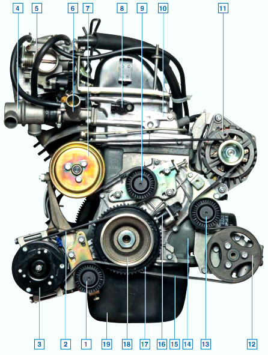
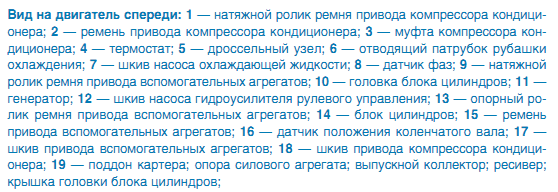
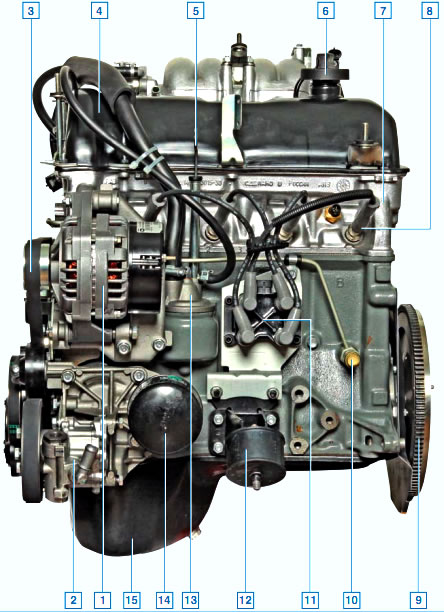
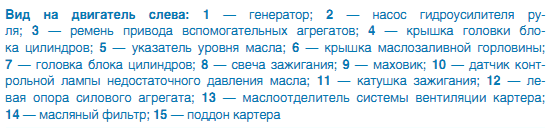
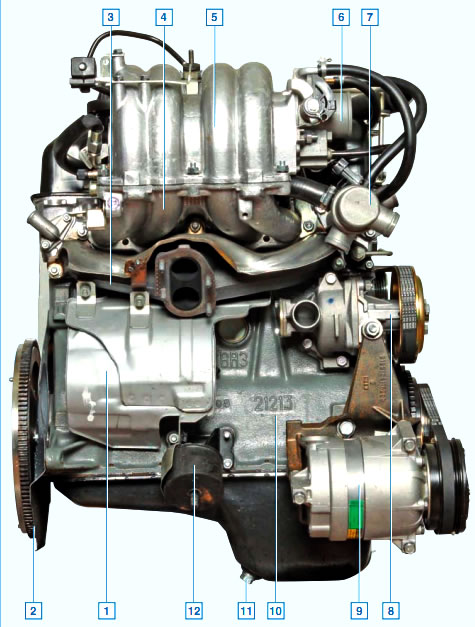
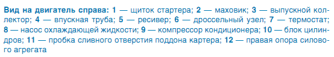
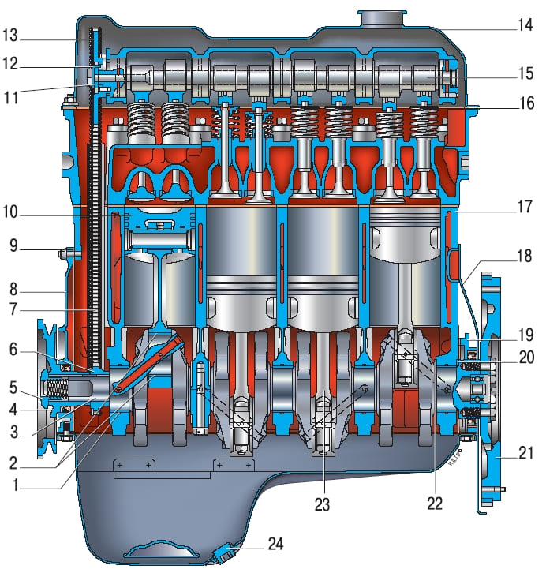
Рисунок 4.1. Продольный разрез двигателя: 1 – вкладыш коренного подшипника; 2 – вкладыш шатунного подшипника; 3 – коленчатый вал; 4 – шкив коленчатого вала; 5 – гайка крепления шкива; 6 – звездочка коленчатого вала; 7 – цепьпривода газораспределительного механизма; 8 – крышка привода газораспределительного механизма; 9 – прокладка крышки; 10 – поршень; 11 – упорная шайба; 12 – стопорная шайба; 13 – звездочка распределительного вала;14 – крышка головки блока цилиндров; 15 – распределительный вал; 16 – прокладка крышки головки блока цилиндров; 17 – блок цилиндров; 18 – крышка картера сцепления; 19 – держатель заднего сальника; 20 – внешнее упорноеполукольцо коленчатого вала; 21 – маховик; 22 – внутреннее упорное полукольцо коленчатого вала; 23 – шатун; 24 – пробка маслосливного отверстия |
|
|
| Цилиндры двигателя объединены вместе с верхней частью картера в единую чугунную отливку – блок 17 (рисунок 4.1) цилиндров. В нижней части блока цилиндров на пяти опорах установлен коленчатый вал 3, отлитый из чугуна. В качестве подшипников опор коленчатого вала, а также подшипников шатунных шеек применены тонкостенные биметаллические сталеалюминиевые вкладыши. Передний и задний концы коленчатого вала уплотнены самоподжимными резиновыми сальниками. |
| В каждом цилиндре двигателя имеется по одному впускному и выпускному клапану. Выпускные клапаны сварные из двух частей: стержня из хромоникелемолибденовой стали, тарелки из хромоникелемарганцевой стали с наплавкой рабочей фаски специальным жаростойким сплавом. Впускные клапаны изготовлены из хромоникелемолибденовой стали. Стержни всех клапанов азотированы, а торцы стержней закалены токами высокой частоты. |
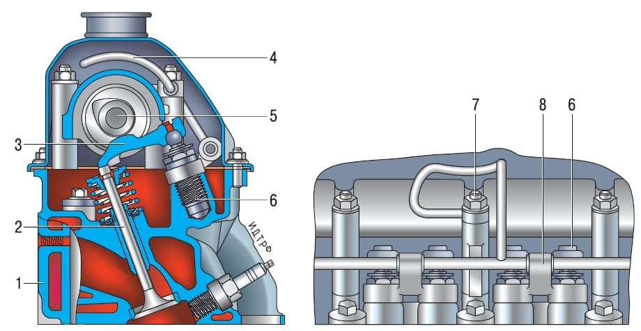
Рисунок 4.3. Механизм привода клапанов: 1 – головка блока цилиндров; 2 – клапан; 3 – рычаг приводаклапана; 4 – трубка подвода масла к гидроопорам; 5 – распределительный вал; 6 – гидроопора рычагапривода клапана; 7 – гайка крепления корпуса подшипников распределительного вала и трубки подвода масла к гидроопорам; 8 – стойка рампы подвода масла к гидроопорам |
|
|
| Клапаны перемещаются в направляющих втулках под действием кулачков распределительного вала через стальные рычаги 3 (рисунок 4.3), опирающиеся одним плечом на сферические головки гидроопор 6, другим – на торцы стержней клапанов 2. Гидроопоры ввернуты в гнезда головки 1 блока. Масло под давлением к гидроопорам подается по отдельной трубке 4 рампы из отверстия в корпусе подшипников распределительного вала возле средней шпильки его крепления. Так как зазоры в клапанном механизме практически отсутствуют, применявшиеся в двигателе ВАЗ-21213 прижимные пружины рычагов исключены. |
| Поршни 10 (см. рисунок 4.1) отлиты из алюминиевого сплава и покрыты слоем олова для улучшения прирабатываемости. Юбки поршней имеют сложную геометрическую форму: по высоте коническую, с большим основанием внизу юбки, а в поперечном сечении – овальную, с большей осью, расположенной перпендикулярно оси поршневого пальца. Оси отверстий под поршневые пальцы смещены от оси симметрии поршней на 1,2 мм в правую сторону двигателя. В канавках поршней установлены два компрессионных кольца и одно маслосъемное. В канавке маслосъемного кольца имеются сквозные сверления, через которые собранное кольцом масло подается внутрь поршня для смазки поршневого пальца. С коваными стальными шатунами 23 поршни соединены с помощью стальных цементированных поршневых пальцев трубчатого сечения. Поршневые пальцы плавающего типа свободно вращаются в верхних бобышках шатуна и в бобышках поршней. От осевого перемещения поршневые пальцы зафиксированы пружинными кольцами, расположенными в проточках бобышек поршней. |
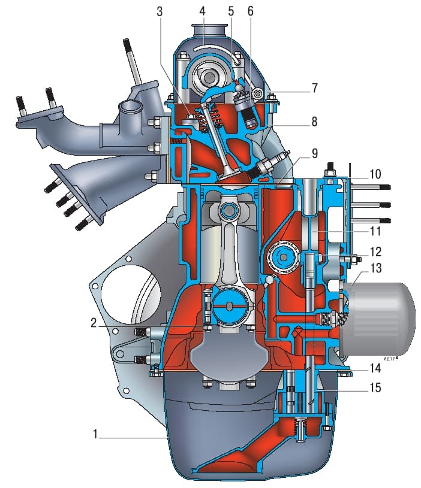
Рисунок 4.2. Поперечный разрез двигателя: 1 – масляный картер; 2 – гайка шатунного болта; 3 – болт крепления головки блока цилиндров; 4 – трубка подвода масла к гидроопорам; 5 – рычаг привода клапана; 6 – гидроопора; 7 – крышка головки блока цилиндров; 8 – головка блока цилиндров; 9 – прокладка головки блока цилиндров; 10 – кронштейн крепления модуля зажигания; 11 – заглушка; 12 – шестерня привода масляного насоса; 13 – масляныйфильтр; 14 – прокладка масляного картера; 15 – масляный насос |
|
|
| Распределительный вал 15 (рисунок 4.1) чугунный, литой, с отбеленными трущимися поверхностями кулачков, установлен в съемном алюминиевом корпусе, закрепленном на верхней плоскости головки блока цилиндров 8 (см. рисунок 4.2), отлитой из алюминиевого сплава. Он приводится во вращение от коленчатого вала однорядной роликовой цепью 7 (см. рисунок 4.1). Этой же цепью приводится во вращение вал привода масляного насоса. Число зубьев звездочки вала привода масляного насоса уменьшено по сравнению с двигателем ВАЗ-21213 с 38 до 30 с целью повышения подачи масляного насоса. |
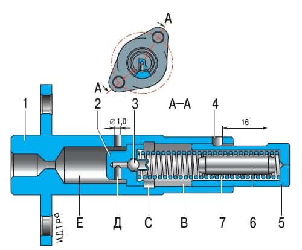
Рисунок 4.4. Натяжитель цепи привода распределительного вала: 1 – корпус; 2 – клапанный узел;3 – шарик обратного клапана; 4 – ограничительный штифт; 5 – плунжер натяжителя; 6 – ограничитель объема; 7 – пружина плунжера; В – рабочаяполость; С – установочный паз; Д – подающее от верстие; Е – резервная полость |
|
|
| Цепь в натянутом состоянии поддерживается пружинно-гидравлическим натяжителем через пластмассовый башмак, размеры которого по сравнению с башмаком двигателя ВАЗ-21213 значительно увеличены. До пуска двигателя предварительное натяжение цепи обеспечивается пружиной 7 (рисунок 4.4), а после пуска – давлением масла, подаваемого по стальной трубке от переходника под датчиком аварийного падения давления масла. |
| Масло из системы смазки по трубке 4 (см. рисунок 4.3) под давлением поступает в полость «Е» (см. рисунок 4.4) натяжителя, далее через отверстие «Д» и клапанный узел 2 попадает в полость «В», где воздействует на плунжер 5. В корпусе 1 натяжителя выполнено дренажное отверстие диаметром 1 мм для выпуска воздуха из полости «Е». |
| Колебания цепи гасятся успокоителем, так же как и башмак натяжителя, изготовленным из износостойкой пластмассы. |
| Головка блока цилиндров прикреплена к блоку одиннадцатью болтами и отцентрирована на нем двумя втулками. Между головкой и блоком установлена прокладка одноразового применения, изготовленная из безусадочного материала. Сверху головка блока закрыта стальной штампованной крышкой 14 (см. рисунок 4.1), под которой установлена уплотнительная прокладка из резинопробковой смеси. |
| К нижней части блока цилиндров через резинопробковую прокладку прикреплен масляный картер 1 (см. рисунок 4.2), закрывающий полость блока снизу и выполняющий функцию резервуара для масла. |
| Система смазки двигателя комбинированная: под давлением и разбрызгиванием. Коренные и шатунные подшипники, опоры привода распределительного вала и вал привода масляного насоса, кулачки распределительного вала и втулки шестерни привода масляного насоса смазываются под давлением. Маслом, вытекающим из зазоров и разбрызгиваемым движущимися деталями, смазываются стенки цилиндров, поршни с поршневыми кольцами, поршневые пальцы, цепь привода газораспределительного механизма, шаровые головки гидроопор привода клапанов, а также стержни клапанов и их направляющие втулки. Система состоит из масляного картера 1, шестеренчатого масляного насоса 15 с встроенным редукционным клапаном и маслоприемником, имеющим сетчатый фильтр грубой очистки масла, полнопоточного фильтра 13 тонкой очистки масла с перепускным и противодренажным клапанами, датчика контрольной лампы недостаточного давления масла и масляных каналов. |
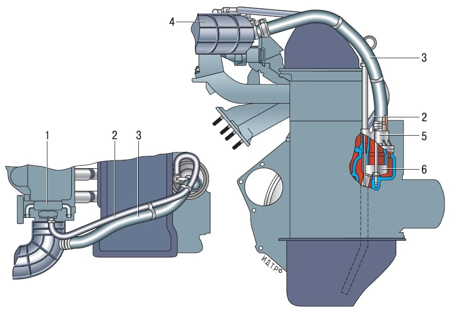
Рисунок 4.5. Схема системы вентиляциикартера (слева – вид сверху): 1 – дроссельный узел; 2 – шланг первого контура;3 – шланг второго контура; 4 – воздухоподводящий патрубок; 5 – крышка сапуна; 6 – маслоотделитель3 – шарик обратного клапана; 4 – ограничительный штифт; 5 – плунжер натяжителя; 6 – ограничитель объема; 7 – пружина плунжера; В – рабочаяполость; С – установочный паз; Д – подающее от верстие; Е – резервная полость |
|
|
| Система вентиляции картера закрытая, с отводом картерных газов через маслоотделитель 6 (рисунок 4.5) во впускную трубу. Далее картерные газы направляются в цилиндры двигателя, где сгорают. При работе двигателя на режиме холостого хода картерные газы поступают по шлангу 2 первого контура через калиброванное отверстие (жиклер) в корпусе дроссельного узла. На этом режиме во впускной трубе создается высокое разрежение и картерные газы эффективно отсасываются в задроссельное пространство. Жиклер ограничивает объем отсасываемых газов, чтобы не нарушалась работа двигателя на холостом ходу. При работе двигателя под нагрузкой, когда дроссельная заслонка частично или полностью открыта, основной объем газов проходит по шлангу 3 второго контура в воздухоподводящий патрубок 4 перед дроссельным узлом и далее во впускную трубу и камеры сгорания. |
| Система охлаждения двигателя состоит из рубашки охлаждения, выполненной в литье и окружающей цилиндры в блоке, камеры сгорания и газовые каналы в головке блока цилиндров и впускной трубе. Принудительную циркуляцию жидкости в системе обеспечивает центробежный водяной насос с приводом от коленчатого вала с помощью клинового ремня, одновременно служащего приводом генератора. Для поддержания нормальной рабочей температуры охлаждающей жидкости в систему охлаждения устанавливают термостат, перекрывающий большой круг системы при непрогретом двигателе и низкой температуре охлаждающей жидкости. |
| Система питания двигателя двигателя состоит из электрического топливного насоса, установленного в топливном баке, дроссельного узла, фильтра тонкой очистки топлива, регулятора давления топлива, форсунок и топливных шлангов. Система зажигания состоит из модуля зажигания, установленного на специальном кронштейне на блоке цилиндров, свечей зажигания и проводов высокого напряжения. Управляет системой зажигания электронный блок управления двигателем (ЭБУ). |
Рекомендации по эксплуатации двигателя
| При известном навыке и внимательности многие неисправности двигателя и его систем можно довольно точно определить по цвету дыма, выходящего из выхлопной трубы. Синий дым свидетельствует о попадании масла в камеры сгорания, причем постоянное дымление – признак сильного износа деталей цилиндропоршневой группы. Появление дыма при перегазовках, после длительного прокручивания стартером, после долгой работы на холостом ходу или сразу после торможения двигателем указывает, как правило, на износ маслосъемных колпачков клапанов. Черный дым – слишком богатая смесь из-за неисправности системы управления двигателем или форсунок. Сизый дым с примесью влаги (особенно после перегрева двигателя) означает, что охлаждающая жидкость попала в камеру сгорания через поврежденную прокладку головки блока цилиндров. При сильном повреждении этой прокладки жидкость иногда попадает и в масляный поддон, при этом уровень масла резко повышается, а само масло превращается в мутную белесую эмульсию. Белый дым, особенно при непрогретом двигателе или в холодную погоду, – нормальное явление. |
| Довольно часто можно увидеть стоящий посреди городской пробки автомобиль с открытым капотом, испускающий клубы пара. Перегрев. Лучше, конечно, этого не допускать, почаще поглядывая на указатель температуры. Но никто не застрахован от того, что может неожиданно отказать термостат, электровентилятор или просто потечь тосол. Если вы упустили момент перегрева, не паникуйте и не усугубляйте ситуацию. Не так страшен перегрев, как его возможные последствия. Никогда сразу же не глушите двигатель – он получит тепловой удар и, возможно, остыв, вообще откажется заводиться. Остановившись, дайте ему работать на холостых оборотах, при этом в системе сохранится циркуляция жидкости. Включите на максимальную мощность отопитель и откройте капот. Если есть возможность, поливайте радиатор холодной водой. Только добившись снижения температуры, остановите двигатель. Но никогда сразу не открывайте пробку расширительного бачка или радиатора – на перегретом двигателе гейзер из-под открытой пробки обеспечен. Не спешите, дайте всему остыть и вы сохраните здоровье машины и ваше собственное. |
| Практически во всех инструкциях к автомобилю содержится Рекомендация при пуске двигателя обязательно выжать сцепление. Эта Рекомендация оправдана только в случае пуска в сильный мороз, чтобы не тратить энергию аккумулятора на проворачивание валов и шестерен коробки передач в загустевшем масле. В остальных случаях – это просто Рекомендация для того, чтобы автомобиль не тронулся, если по забывчивости включена передача. Этот прием вреден для двигателя, так как при выжатом сцеплении через него на упорный подшипник коленчатого вала передается значительное усилие, а при пуске (особенно холодном) смазка к нему долго не поступает. Подшипник быстро изнашивается, коленчатый вал получает осевой люфт, и трогание с места начинает сопровождаться сильной вибрацией. Чтобы не портить двигатель, возьмите в привычку проверять перед пуском положение рычага переключения передач и пускать двигатель при затянутом ручном тормозе, не выжимая сцепление без крайней необходимости. |
Видео